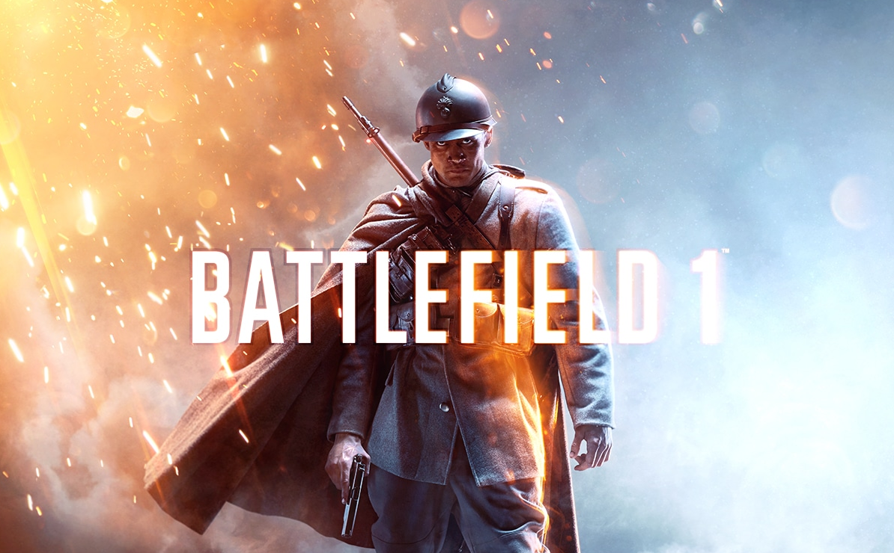
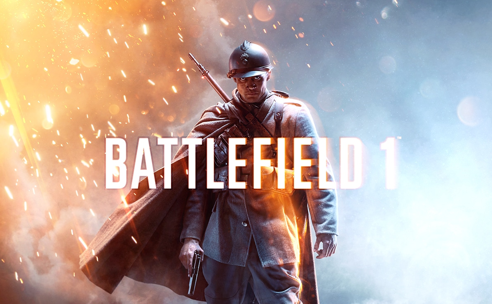

Battlefield 1
 

Battlefield 1 är en förstapersonsskjutare utvecklat av Digital Illusions CE och utgivet av Electronic Arts den 21 oktober 2016 till Microsoft Windows, Playstation 4 och Xbox One.[1] Trots sitt namn är det den fjortonde delen i Battlefield-serien, den första delen i serien sedan Battlefield 4 (2013)[2] och det första datorspelet utgivet av Electronic Arts som utspelar sig under första världskriget sedan Wings of Glory från 1994. I spelet kan man spela för Tyska Kejsardömet, Österrike-Ungern, Kungariket Italien, Storbritannien och USA. I DLCn They Shall Not Pass kan man även spela för Franska Armén.[3]